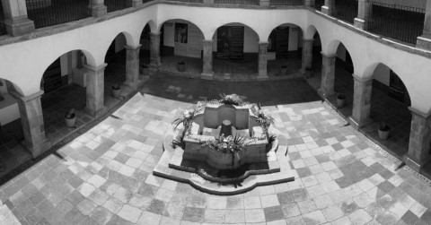
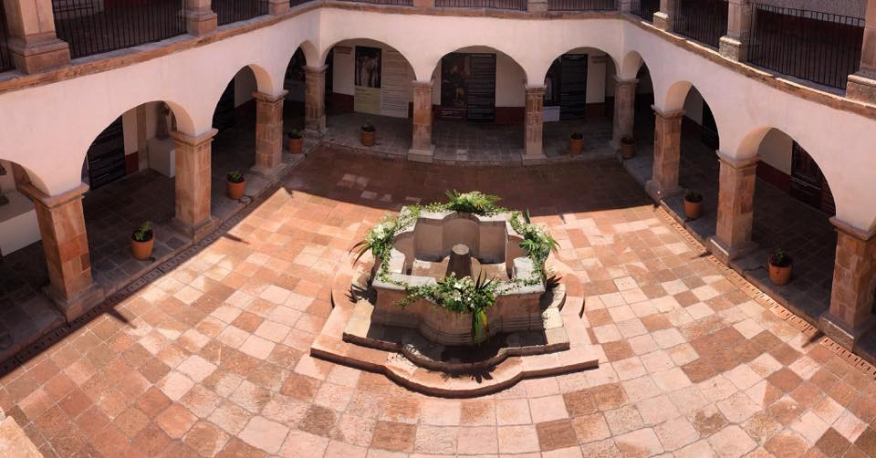
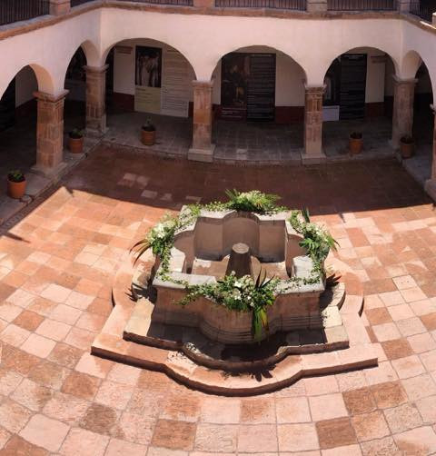
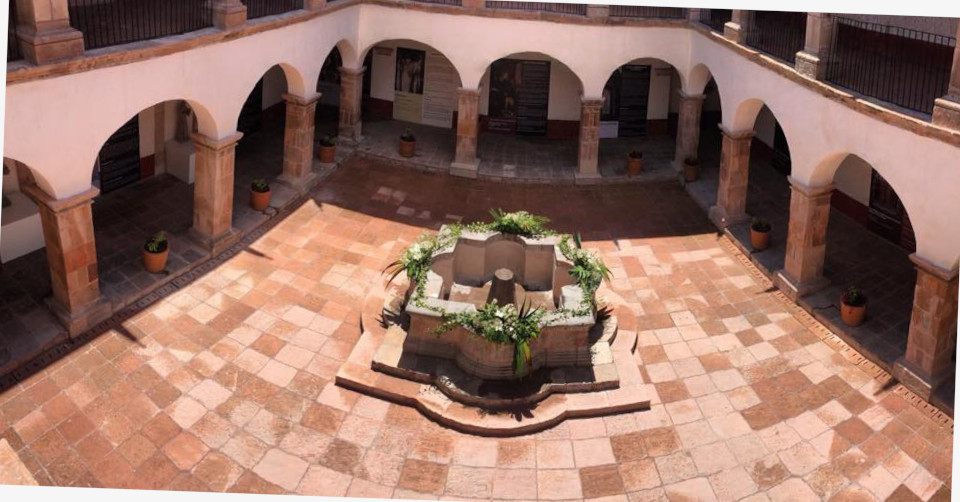
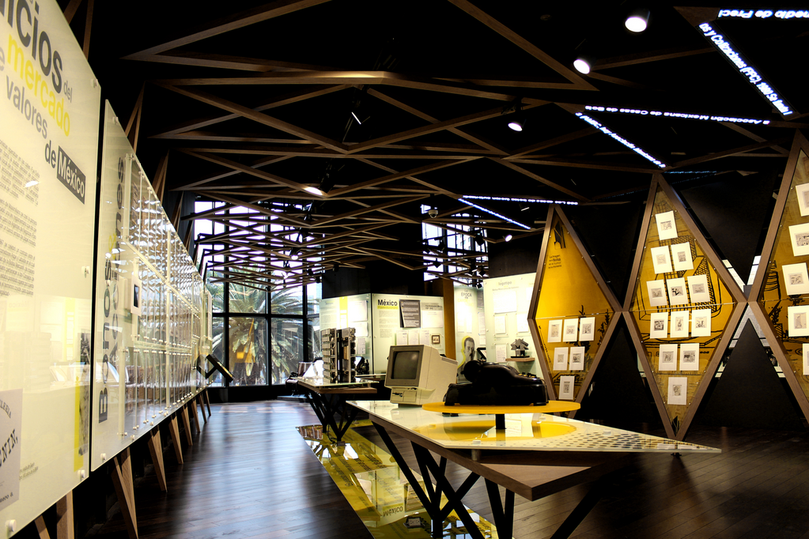

Comparación de Imágenes
49199_escalada.jpeg vs 49199_escalada.jpeg
{'Diferencia_Estructural_pHash': 0, 'Similitud_Estructural_pct': '100.00%', 'Similitud_Color_Histograma': '100.00%'}
49199_escalada.jpeg vs 49199_escalada_grises.jpeg
 |
 |
{'Diferencia_Estructural_pHash': 0, 'Similitud_Estructural_pct': '100.00%', 'Similitud_Color_Histograma': '-0.10%'}
49199_escalada.jpeg vs 49199_original.jpeg
|
 |
{'Diferencia_Estructural_pHash': 2, 'Similitud_Estructural_pct': '96.88%', 'Similitud_Color_Histograma': '99.90%'}
49199_escalada.jpeg vs 49199_recortada.jpeg
|
 |
{'Diferencia_Estructural_pHash': 32, 'Similitud_Estructural_pct': '50.00%', 'Similitud_Color_Histograma': '96.00%'}
49199_escalada.jpeg vs 49199_rotada.jpeg
|
 |
{'Diferencia_Estructural_pHash': 8, 'Similitud_Estructural_pct': '87.50%', 'Similitud_Color_Histograma': '98.95%'}
49199_escalada.jpeg vs museo_2029_i_59602.png
|
 |
{'Diferencia_Estructural_pHash': 28, 'Similitud_Estructural_pct': '56.25%', 'Similitud_Color_Histograma': '0.01%'}
49199_escalada_grises.jpeg vs 49199_escalada.jpeg
{'Diferencia_Estructural_pHash': 0, 'Similitud_Estructural_pct': '100.00%', 'Similitud_Color_Histograma': '-0.10%'}
49199_escalada_grises.jpeg vs 49199_escalada_grises.jpeg
{'Diferencia_Estructural_pHash': 0, 'Similitud_Estructural_pct': '100.00%', 'Similitud_Color_Histograma': '100.00%'}
49199_escalada_grises.jpeg vs 49199_original.jpeg
{'Diferencia_Estructural_pHash': 2, 'Similitud_Estructural_pct': '96.88%', 'Similitud_Color_Histograma': '-0.12%'}
49199_escalada_grises.jpeg vs 49199_recortada.jpeg
{'Diferencia_Estructural_pHash': 32, 'Similitud_Estructural_pct': '50.00%', 'Similitud_Color_Histograma': '-0.01%'}
49199_escalada_grises.jpeg vs 49199_rotada.jpeg
{'Diferencia_Estructural_pHash': 8, 'Similitud_Estructural_pct': '87.50%', 'Similitud_Color_Histograma': '13.68%'}
49199_escalada_grises.jpeg vs museo_2029_i_59602.png
{'Diferencia_Estructural_pHash': 28, 'Similitud_Estructural_pct': '56.25%', 'Similitud_Color_Histograma': '97.38%'}
49199_original.jpeg vs 49199_escalada.jpeg
{'Diferencia_Estructural_pHash': 2, 'Similitud_Estructural_pct': '96.88%', 'Similitud_Color_Histograma': '99.90%'}
49199_original.jpeg vs 49199_escalada_grises.jpeg
{'Diferencia_Estructural_pHash': 2, 'Similitud_Estructural_pct': '96.88%', 'Similitud_Color_Histograma': '-0.12%'}
49199_original.jpeg vs 49199_original.jpeg
{'Diferencia_Estructural_pHash': 0, 'Similitud_Estructural_pct': '100.00%', 'Similitud_Color_Histograma': '100.00%'}
49199_original.jpeg vs 49199_recortada.jpeg
{'Diferencia_Estructural_pHash': 32, 'Similitud_Estructural_pct': '50.00%', 'Similitud_Color_Histograma': '95.96%'}
49199_original.jpeg vs 49199_rotada.jpeg
{'Diferencia_Estructural_pHash': 8, 'Similitud_Estructural_pct': '87.50%', 'Similitud_Color_Histograma': '98.96%'}
49199_original.jpeg vs museo_2029_i_59602.png
{'Diferencia_Estructural_pHash': 26, 'Similitud_Estructural_pct': '59.38%', 'Similitud_Color_Histograma': '0.04%'}
49199_recortada.jpeg vs 49199_escalada.jpeg
{'Diferencia_Estructural_pHash': 32, 'Similitud_Estructural_pct': '50.00%', 'Similitud_Color_Histograma': '96.00%'}
49199_recortada.jpeg vs 49199_escalada_grises.jpeg
{'Diferencia_Estructural_pHash': 32, 'Similitud_Estructural_pct': '50.00%', 'Similitud_Color_Histograma': '-0.01%'}
49199_recortada.jpeg vs 49199_original.jpeg
{'Diferencia_Estructural_pHash': 32, 'Similitud_Estructural_pct': '50.00%', 'Similitud_Color_Histograma': '95.96%'}
49199_recortada.jpeg vs 49199_recortada.jpeg
{'Diferencia_Estructural_pHash': 0, 'Similitud_Estructural_pct': '100.00%', 'Similitud_Color_Histograma': '100.00%'}
49199_recortada.jpeg vs 49199_rotada.jpeg
{'Diferencia_Estructural_pHash': 30, 'Similitud_Estructural_pct': '53.12%', 'Similitud_Color_Histograma': '95.04%'}
49199_recortada.jpeg vs museo_2029_i_59602.png
{'Diferencia_Estructural_pHash': 26, 'Similitud_Estructural_pct': '59.38%', 'Similitud_Color_Histograma': '0.34%'}
49199_rotada.jpeg vs 49199_escalada.jpeg
{'Diferencia_Estructural_pHash': 8, 'Similitud_Estructural_pct': '87.50%', 'Similitud_Color_Histograma': '98.95%'}
49199_rotada.jpeg vs 49199_escalada_grises.jpeg
{'Diferencia_Estructural_pHash': 8, 'Similitud_Estructural_pct': '87.50%', 'Similitud_Color_Histograma': '13.68%'}
49199_rotada.jpeg vs 49199_original.jpeg
{'Diferencia_Estructural_pHash': 8, 'Similitud_Estructural_pct': '87.50%', 'Similitud_Color_Histograma': '98.96%'}
49199_rotada.jpeg vs 49199_recortada.jpeg
{'Diferencia_Estructural_pHash': 30, 'Similitud_Estructural_pct': '53.12%', 'Similitud_Color_Histograma': '95.04%'}
49199_rotada.jpeg vs 49199_rotada.jpeg
{'Diferencia_Estructural_pHash': 0, 'Similitud_Estructural_pct': '100.00%', 'Similitud_Color_Histograma': '100.00%'}
49199_rotada.jpeg vs museo_2029_i_59602.png
{'Diferencia_Estructural_pHash': 24, 'Similitud_Estructural_pct': '62.50%', 'Similitud_Color_Histograma': '13.45%'}
museo_2029_i_59602.png vs 49199_escalada.jpeg
{'Diferencia_Estructural_pHash': 28, 'Similitud_Estructural_pct': '56.25%', 'Similitud_Color_Histograma': '0.01%'}
museo_2029_i_59602.png vs 49199_escalada_grises.jpeg
{'Diferencia_Estructural_pHash': 28, 'Similitud_Estructural_pct': '56.25%', 'Similitud_Color_Histograma': '97.38%'}
museo_2029_i_59602.png vs 49199_original.jpeg
{'Diferencia_Estructural_pHash': 26, 'Similitud_Estructural_pct': '59.38%', 'Similitud_Color_Histograma': '0.04%'}
museo_2029_i_59602.png vs 49199_recortada.jpeg
{'Diferencia_Estructural_pHash': 26, 'Similitud_Estructural_pct': '59.38%', 'Similitud_Color_Histograma': '0.34%'}
museo_2029_i_59602.png vs 49199_rotada.jpeg
{'Diferencia_Estructural_pHash': 24, 'Similitud_Estructural_pct': '62.50%', 'Similitud_Color_Histograma': '13.45%'}
museo_2029_i_59602.png vs museo_2029_i_59602.png
{'Diferencia_Estructural_pHash': 0, 'Similitud_Estructural_pct': '100.00%', 'Similitud_Color_Histograma': '100.00%'}